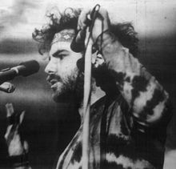

Rise up and abandon the creeping meatball!
-Yippie slogan
While the counterculture as a whole did not have any particular political ideology, there were many political groups within the counterculture, many of which which had left-anarchist leanings. The role of politics within the movement was controversial, some hippies accused their more political bretheren of being Marxists in psychedelic clothing. More traditional left wing activists likewise were not fond of these countercultural political groups, seeing them as being unserious and drugged out.
One of these many countercultural political groups was the Youth International Party, more commonly shortened to the Yippies. The party was known in particular for it's outlandish rhetoric and actions, which included such acts as throwing money down into the New York Stock Exchange and nominating a pig, named Pigasus, for the 1968 Democratic National Convention
The Yippies methods and ideology differed significantly from most non-countercultural political groups. Yippie protest was much more theatrical and disruptive, being almost comparable to street performance. How the message was delivered was just as important as the message itself. They also preferred to model themselves after either highly mythologized versions of actual political figures or characters from pop culture such as the Lone Ranger. They believed that trying to live up to myths would be what brought out the best in people.
The Yippies were also very anti-authoritarian and non-hierarchal. They also claimed to not stand for anything in particular and to embrace revolution for it's own sake, though in practice they tended to have personal causes that they cared about. The quote on the top of this page isn't just a meaningless statement, the creeping meatball is defined as whatever issue an individual Yippie feels like addressing.